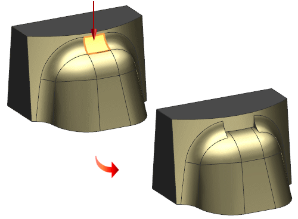

Delete Face enhancement
You can now use the Delete Face command to delete a portion of a blend and cap the end of the blend where it neighbors another blend. When you use the new Delete Partial Blend option all faces selected must be blends.
|
|
|
Setback = Selected Blend This option caps the remaining blends by a setback along the selected blend. |
|
Setback = Neighbor Blend This option caps the remaining blends by a setback along the neighbor of the selected blend.  |
Where do I find it?
|
Application |
Modeling, Shape Studio, Advanced Simulation, Manufacturing |
|
Toolbar |
Synchronous Modeling→Delete Face |
|
Menu |
Insert→Synchronous Modeling→Delete Face |
|
Location in dialog box |
Settings group→Delete Partial Blend check box |